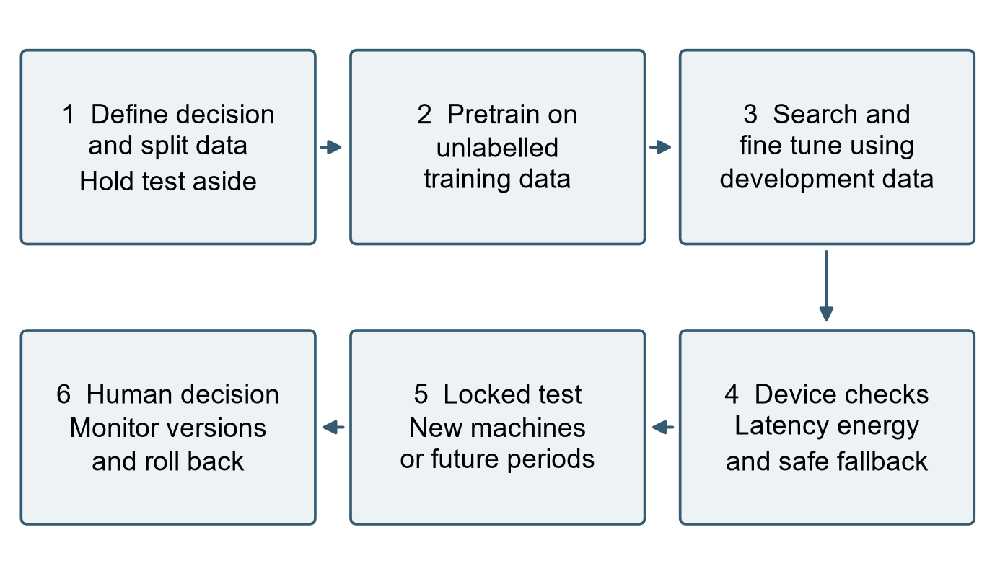

The Activity
Unit 12 · Prepared 13 November 2026 · Tutor: Dr Elizabeth Oladapo · Evidences learning outcomes 1 to 4
Seminar brief: review and discuss how AI-driven automation is reshaping industries, through self-supervised learning, Neural Architecture Search, Edge AI, and the future of AI ethics, scalability and sustainability. I prepared by working all four topics through one case, predictive maintenance of induction motors, which the unit’s required reading surveys (Drakaki et al., 2022). No code was run for this activity.
Findings
| Topic | What I looked at | What I found |
|---|---|---|
| Self-supervised learning | Motor current and vibration (Gopalakrishnan et al., 2026) | 94.2% accuracy against 89.1% for the strongest centralised model without SSL, but each site still fine-tuned on labelled data. The useful test is rare-fault recall on unseen machines at the same label budget. |
| Neural Architecture Search | ENAS on microcontrollers (Khan, Srivastava and Arjunan, 2026) | Mean search time fell from 102.2 to 42.4 minutes with no significant accuracy difference, but the chosen models used more Flash and computation, and energy was only estimated. |
| Edge AI | Alarms on the device; EU refrigeration incidents since October 2026 (ENISA, 2026) | Local alarms keep working when the network fails, but connected controllers open a new route for attacks. Since September 2026, manufacturers must report actively exploited vulnerabilities under the EU Cyber Resilience Act. |
| Ethics, scalability and sustainability | Zhou et al. (2023), Morales, Nousala and Ghobakhloo (2024), the International Energy Agency (2026) and GOV.UK guidance | Efficiency gains make AI more widely used, so total AI electricity use is still expected to rise. Alert histories that identify operators become staff records, so monitoring must be justified and staff told. |
| Remote team | A proposed rollout decision | The device lead and the maintenance lead record their evidence in one shared log, and one named person signs the decision. |

Before a wider rollout, I would want to see three things. The model should find rare faults on machines it has never seen. Measured on the device, it should be fast enough, its energy use should be known, and it should do better than the current maintenance routine. Finally, one named person should sign the decision and keep the log.
Evidence
Khan, Srivastava and Arjunan’s (2026) resource table, reproduced here under its CC BY-SA 4.0 licence, is the evidence for the Neural Architecture Search row above.
| Dataset | Method | RAM (KB) | Flash (KB) | MACC (M) |
|---|---|---|---|---|
| VWW | NanoNAS | 40.4 ± 28.6 | 14.0 ± 4.6 | 1.77 ± 1.49 |
| ENAS | 12.1 ± 5.5 | 53.8 ± 37.8 | 2.56 ± 2.44 | |
| Cancer | NanoNAS | 37.0 ± 27.3 | 9.4 ± 2.4 | 0.86 ± 0.86 |
| ENAS | 7.6 ± 4.1 | 50.7 ± 42.0 | 1.85 ± 1.72 | |
| Ratio (all, VWW / Cancer) | 0.30 / 0.21 | 3.84 / 5.40 | 1.44 / 2.15 | |
| Ratio (matched acc.) | 0.38 / 0.38 | 2.85 / 5.73 | 1.39 / 3.94 |
AI Acknowledgement
Generative AI tools (Grammarly and Claude) were used for proofreading, language refinement, and formatting support. All analyses, interpretations, conclusions and recommendations are my own work.
References
Chowdhery, A., Warden, P., Shlens, J., Howard, A. and Rhodes, R. (2019) ‘Visual Wake Words dataset’, arXiv [Preprint]. Available at: https://doi.org/10.48550/arXiv.1906.05721.
Drakaki, M., Karnavas, Y.L., Tziafettas, I.A., Linardos, V. and Tzionas, P. (2022) ‘Machine learning and deep learning based methods toward Industry 4.0 predictive maintenance in induction motors: state of the art survey’, Journal of Industrial Engineering and Management, 15(1), pp. 31–57. Available at: https://doi.org/10.3926/jiem.3597.
ENISA (2026) Joint statement on cyber incidents in refrigeration systems across the EU, 4 November. Available at: https://www.enisa.europa.eu/news/joint-statement-on-cyber-incidents-in-refrigeration-systems-across-the-eu (Accessed: 13 November 2026).
Gopalakrishnan, T., Shanmugasundaram, N., Simon, D., Chan, C.K., Sonawane, C., Dixit, S. and Bongale, A. (2026) ‘Data-driven predictive maintenance of induction motors using self-supervised and federated learning on noisy current and vibration signals’, Scientific Reports, 16, article 16396. Available at: https://doi.org/10.1038/s41598-026-46550-6.
GOV.UK (no date) Data protection and your business: monitoring staff at work. Available at: https://www.gov.uk/data-protection-your-business/monitoring-staff-at-work (Accessed: 13 November 2026).
International Energy Agency (2026) Key questions on energy and AI. Paris: IEA. Available at: https://www.iea.org/reports/key-questions-on-energy-and-ai (Accessed: 13 November 2026).
Khan, M.M., Srivastava, N. and Arjunan, P. (2026) ‘ENAS: an efficient hardware-aware neural architecture search framework for TinyML on resource-constrained microcontrollers’, arXiv [Preprint]. Available at: https://doi.org/10.48550/arXiv.2609.30272.
Morales, M., Nousala, S. and Ghobakhloo, M. (2024) ‘The complexity of sustainable innovation, transitional impacts of Industry 4.0 to 5.0 for our societies: circular society exploring the systemic nexus of socioeconomic transitions’, in Nousala, S., Metcalf, G. and Ing, D. (eds) Industry 4.0 to Industry 5.0: explorations in the transition from a techno-economic to a socio-technical future. Singapore: Springer, pp. 31–56. Available at: https://doi.org/10.1007/978-981-99-9730-5_2.
Zhou, M., Qiao, Y., Liu, B., Vogel-Heuser, B. and Kim, H. (2023) ‘Machine learning for Industry 4.0 [From the Guest Editors]’, IEEE Robotics & Automation Magazine, 30(2), pp. 8–9. Available at: https://doi.org/10.1109/MRA.2023.3266618.